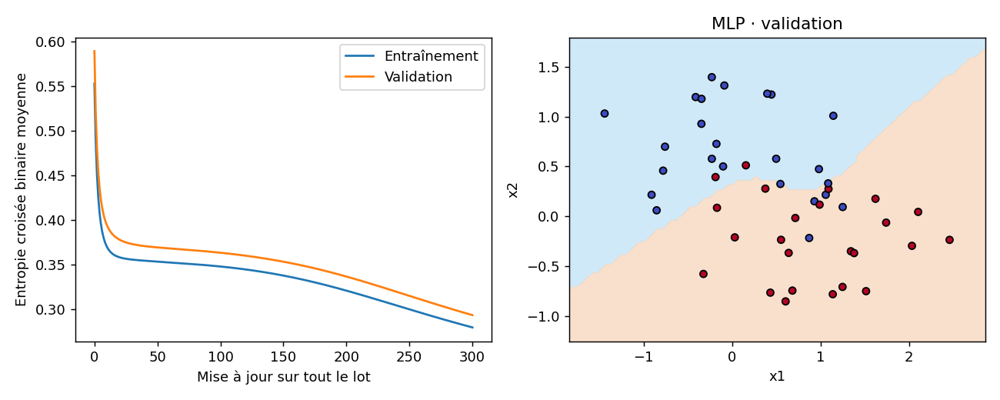

Ting Tan · EEEA · Oct 2026
Exécution de référence mesurée · données pédagogiques fictives
{
"width": 8,
"learning_rate": 0.5,
"epochs": 300,
"parameters": 33,
"initial_training_BCE": 0.5526805437090498,
"final_training_BCE": 0.27950724789280196,
"validation_accuracy": 0.8541666666666666,
"scaler_fitted_rows": 96
}| epoch | training_BCE | validation_BCE |
|---|---|---|
| 0 | 0.5526805437090498 | 0.588993051523195 |
| 75 | 0.35078384467977547 | 0.36634473609608104 |
| 150 | 0.33758299544540415 | 0.3531151366880018 |
| 300 | 0.27950724789280196 | 0.2932956839734793 |

{'python': '3.8.20', 'numpy': '1.24.4', 'sklearn': '1.3.2', 'matplotlib': '3.7.4'}